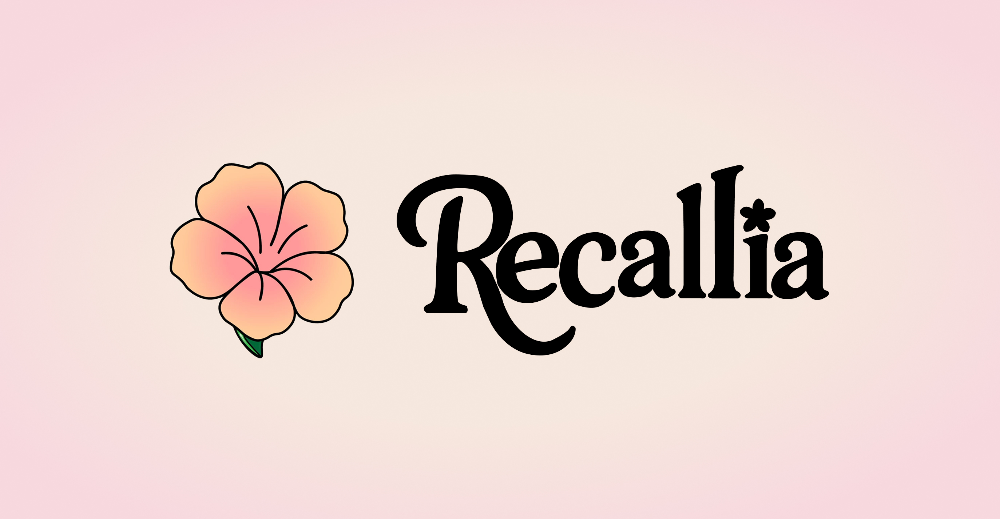
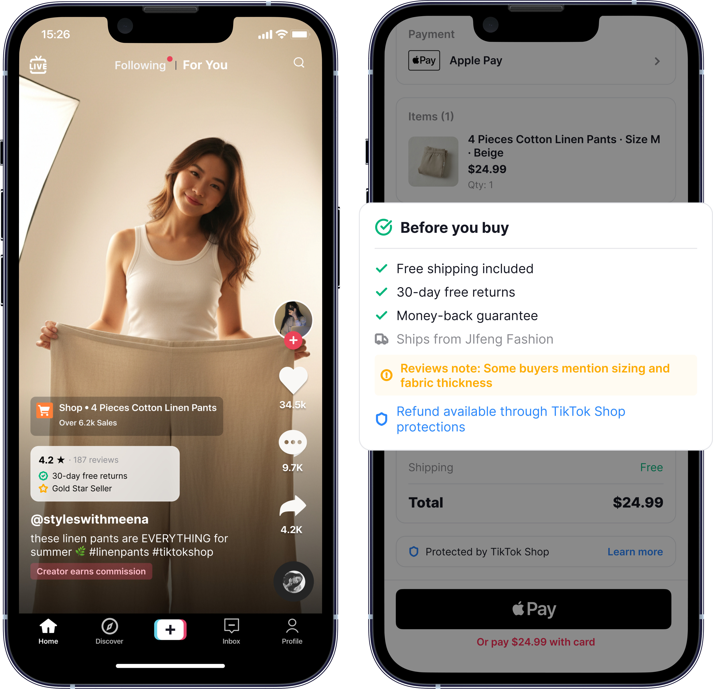
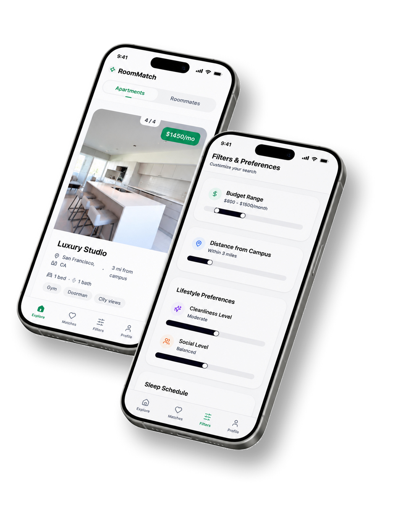

Product Strategy & Design
Building products for people and the systems around them.
Selected work across consumer AI, marketplaces, and product systems.
00 — Selected Work

01
Recallia Ecosystem
Capturing, organizing, and resurfacing memories through an interconnected ecosystem designed for reflection and recall.
Status
Research + Product Strategy
Note
Multi-product ecosystem

02
TikTok Shop Trust Layer
Designing a confidence layer that helps buyers judge products before purchase, during checkout, and after delivery.
Status
Concept / Prototype
Note
Company-scale product strategy

03
Room Match
Reducing roommate uncertainty through compatibility modeling and preference-based matching.
Status
End-to-end Product Strategy
Note
Marketplace experience
Principles
01
AI should augment judgment.
Not replace it.
02
Trust is a product feature.
Not marketing copy.
03
Systems matter more than screens.
Great experiences come from connected experiences.